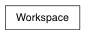

This class is designed to lend more readability to the often confusing workspace command. The four types of workspace entries (objectType, fileRule, renderType, and variable) each have a corresponding dictiony for setting and accessing these mappings.
>>> from pymel.all import *
>>> workspace.fileRules['mayaAscii']
u'scenes'
>>> workspace.fileRules.keys()
[...u'mayaAscii', u'mayaBinary',...]
>>> 'mayaBinary' in workspace.fileRules
True
>>> workspace.fileRules['super'] = 'data'
>>> workspace.fileRules.get( 'foo', 'some_default' )
'some_default'
the workspace dir can be confusing because it works by maintaining a current working directory that is persistent between calls to the command. In other words, it works much like the unix ‘cd’ command, or python’s ‘os.chdir’. In order to clarify this distinction, the names of these flags have been changed in their class method counterparts to resemble similar commands from the os module.
>>> proj = workspace(query=1, dir=1)
>>> proj
u'...'
>>> workspace(create='mydir')
>>> workspace(dir='mydir') # move into new dir
>>> workspace(dir=proj) # change back to original dir
>>> proj = workspace.getcwd()
>>> proj
Path('...')
>>> workspace.mkdir('mydir')
>>> workspace.chdir('mydir')
>>> workspace.chdir(proj)
>>> workspace.path / workspace.fileRules['mayaAscii']
Path('...')